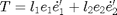

GSTDECOMP - Eigen decomposition of a tensor field.
Contents
Description
Perform the eigen decomposition of a (symmetric) tensor field given by its entries, or the reconstruction of a tensor field given by its eigen- decomposition and/or orientation.
Syntax
- Eigen decomposition of the tensor (2, 4 or 5 ouput parameters):
[l1,l2] = GSTDECOMP(gx2, gy2, gxy);
[l1,l2,e1,e2] = GSTDECOMP(gx2, gy2, gxy);
[l1,l2,e1,e2,theta] = GSTDECOMP(gx2, gy2, gxy, dblangle);
[l1,l2,e1,e2] = GSTDECOMP(T);
[l1,l2,e1,e2,theta] = GSTDECOMP(T, dblangle);
- Tensor reconstruction (1 or 3 output parameters):
[gx2, gy2, gxy] = GSTDECOMP(l1,l2,e1,e2);
T = GSTDECOMP(l1,l2,e1,e2);
[gx2, gy2, gxy] = GSTDECOMP(l1,l2,theta);
T = GSTDECOMP(T, theta);
Remarks
- dblangle is a logical flag specifying if theta is given by the double angle representation or not; default: dblangle=false.
- e1(i,j,:) : main eigenvector at location (i,j) in the image associated with the largest eigenvalue l1(i,j); its x- and y- components are stored in the 1st and 2nd indices of the 3rd dimension.
- e2(i,j,:) : ibid for second eigenvector at location (i,j) associated with the smallest eigenvalue l2(i,j).
- We always have l1>=l2 (not in absolute value however).
See Kroon's derivatives library and Koethe's VIGRA library (avaialble at http://hci.iwr.uni-heidelberg.de/vigra/doc/vigra/group__TensorImaging.html, http://hci.iwr.uni-heidelberg.de/vigra/doc/vigra/tensorutilities_8hxx-source.html).
See also
Related: GSTSMOOTH, EIGENDECOMP2X2SYM.
Function implementation
function [out,varargout] = gstdecomp(in, varargin)
parsing parameters
error(nargchk(1, 4, nargin, 'struct')); error(nargoutchk(1, 5, nargout, 'struct'));
calculation
if (nargout==1 && nargin>1) || nargout==3
- tensor reconstruction
switch nargin case 2 % new tensor from tensor entries and orientation [l1,l2] = gstdecomp(in); [gx2, gy2, gxy] = gstrecomp(l1, l2, varargin{1}); case 3 % new tensor from eigenvalues and orientation l1 = in; l2 = varargin{1}; [gx2, gy2, gxy] = gstrecomp(l1, l2, varargin{2}); case 4 % tensor entries from eigen decomposition l1 = in; l2 = varargin{1}; [gx2, gy2, gxy] = gstrecomp(l1, l2, varargin{2}, varargin{3}); end switch nargout case 1 out(:,:,1,1) = gx2; out(:,:,2,2) = gy2; out(:,:,1,2) = gxy; out(:,:,2,1) = out(:,:,1,2); case 3 out = gx2; varargout{1} = gy2; varargout{2} = gxy; end
elseif (nargin==1&&nargout==1) || nargout==2 || nargout>=4
- eigen decomposition of the tensor
dbleangle = false;
% tensor entries
switch nargin
case {1,2} % the tensor has been passed
gy2 = in(:,:,2,2);
gxy = in(:,:,1,2);
gx2 = in(:,:,1,1);
if nargin==2, dbleangle = varargin{1}; end
case {3,4}
gx2 = in;
gy2 = varargin{1};
gxy = varargin{2};
if nargin==4, dbleangle = varargin{3}; end
end
% set the method used for estimating the eigenvectors
if dbleangle, method = 'koe'; % 'kro'
else method = 'pey';
end
(i) compute the eigenvalues
if any(strcmpi(method,{'koe','kro'})) % VIGRA expression: see file tensorutilities.hxx, function % tensorEigenRepresentation % Kroon expression: see file EigenVectors2D.m d1 = gx2 + gy2; %src.getComponent(s,0) + src.getComponent(s,2); d2 = gx2 - gy2; %src.getComponent(s,0) - src.getComponent(s,2); d3 = 2 * gxy; %2.0 * src.getComponent(s,1); d4 = sqrt(d2.^2 + d3.^2); % hypot(d2, d3) % root = d4; l1 = 0.5 * (d1+d4); %dest.setComponent(0.5 * (d1 + d4), d, 0); l2 = 0.5 * (d1-d4); %dest.setComponent(0.5 * (d1 - d4), d, 1); elseif strcmpi(method,'pey') % another expression for eigenvalues t = 0.5 * (gx2+gy2); % trace/2 a = gx2 - t; % a = 0.5 * (gx2-gy2); ab2 = sqrt(a.^2 + gxy.^2); % we have root = 2 * ab2; (see above) l1 = t + ab2; l2 = t - ab2; end out = l1; varargout{1} = l2;
(ii) compute the eigenvectors
if nargout>2 if strcmpi(method,'koe') % double angle representation: theta in [-pi/2,pi/2] % %theta = gstfeature(gx2, gy2, gxy, 'orient'); theta = 0.5 * atan2(d3, d2); %dest.setComponent(0.5 * VIGRA_CSTD::atan2(d3, d2), d, 2); % note: atan2(0,0)=0 % principal eigen vector e1(:,:,1) = cos(theta); e1(:,:,2) = sin(theta); elseif strcmpi(method,'pey') % atan2 expression for orientation: atan2(l1-gx2,gxy) theta = atan2( ab2-a, gxy ); e1(:,:,1) = cos(theta); e1(:,:,2) = sin(theta); elseif strcmpi(method,'kro') % note: no theta computed here vx = d3; vy = d4 - d2; mag = sqrt(vx.^2 + vy.^2); i = (mag ~= 0); vx(i) = vx(i)./mag(i); vy(i) = vy(i)./mag(i); e1(:,:,1) = vx; e1(:,:,2) = vy; end % eigenvectors are orthogonal e2(:,:,1) = -e1(:,:,2); e2(:,:,2) = e1(:,:,1); varargout{2} = e1; varargout{3} = e2; if nargout==5, varargout{4} = theta; end end
end
end % end of gstdecomp
Subfunction
GSTRECOMP - Compute the entries of the (symmetric) tensor field which corresponds to the given eigendecomposition.
e1(i,j,:) is the main eigenvector at location (i,j) with associated largest eigenvalue l1(i,j). e2(i,j,:) is the second eigenvector at location (i,j) with associated smallest eigenvalue l2(i,j).
Regarding the GST, we have: 
%-------------------------------------------------------------------------- function [gx2, gy2, gxy] = gstrecomp(l1,l2,e1,varargin) switch nargin case 3 % then the orientation has been passed theta = e1; e1(:,:,1) = cos(theta); e1(:,:,2) = sin(theta); e2(:,:,1) = -e1(:,:,2); e2(:,:,2) = e1(:,:,1); case 4 % both eigenvectors have been passed e2 = varargin{1}; end gx2 = l1.*e1(:,:,1).^2 + l2.*e2(:,:,1).^2; gxy = l1.*e1(:,:,1).*e1(:,:,2) + l2.*e2(:,:,1).*e2(:,:,2); gy2 = l1.*e1(:,:,2).^2 + l2.*e2(:,:,2).^2; end